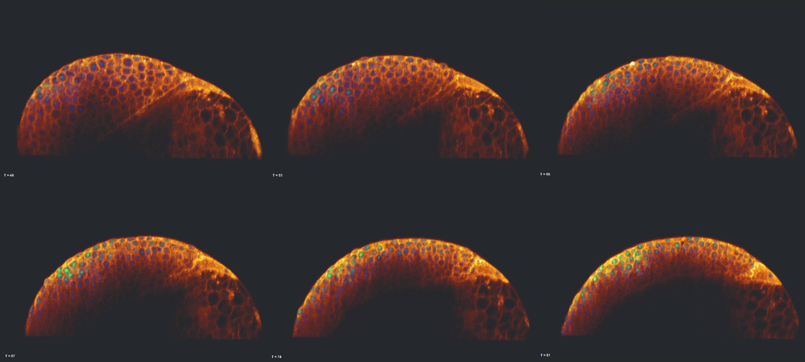
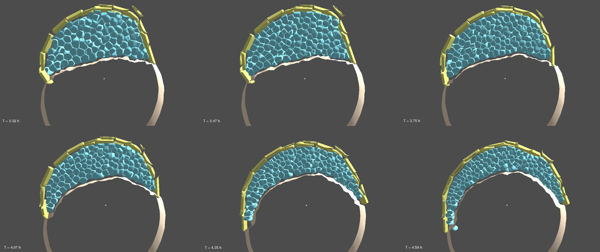
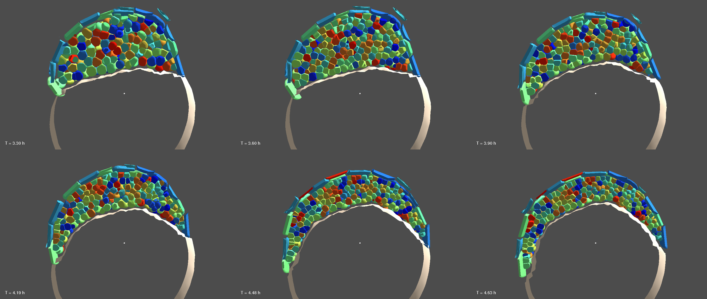

Then we discuss the cartography of the parameter space exhaustively explored. (E. reverse engineering)
A. Hypotheses
B. Observed data
C. Reconstruction
D. Fitness function
E. Discussion
9.1. Yolk
The zebrafish zygote is a large cell filled with cytoplasm and lipid drops. During the first division, both fluids segregate, the cytoplasm being sucked up into dividing cell domain (see figure ). A bilipid membrane progressively compartementalizes the cells at the animal pole from the lipid drops, forming an independent structure called yolk. After the Xth division cycle, the marginal deep cells synchronizely send half of their nuclei and cytoplasm into the yolk, forming a third structure called yolk syncytial layer (YSL). At that point, the cells definitely separated from the yolk.
A. Hypotheses
In our mechanical model, we approximate the cells and the yolk as independent structures from the zygotic stage. To capture the dynamical mechanical interaction between the cells and the yolk, we also model the yolk in the particle-based paradigm. Two particle categories compose the yolk: external yolk membrane particles form a viscoelastic layer and inner yolk particles represent the lipid drops contained by the external layer.
In figure , the yellow particles represent the yolk membrane. By yolk membrane, we denote not only the bilipic layer surrounding the yolk but also the cytoskeletal material underlying it (acto-myosin, tubulin structures...). The yolk membrane topology is defined by a geodesic dome. It is derived from an icosahedron, one of the five Platonic solids and it remains invariant through time. An icosahedron's surface is composed of 20 identical equlateral triangles, 12 vertices and 30 edges. This topology is refined by subdividing each triangles by four new identical equilateral triangles. The new vertices are projected on the sphere. This process is repeated 4 times to approximate a spherical shape with 5120 triangles and 2562 vertices (see figure ).
Any other Platonic solid could have been chosen without any significant drawback.
However, the icosahedron has the better trade-off between stability (its elementary faces are triangles) and volume maximization (only the dodecahedron occupied a slightly larger volume by it has pentagonal faces).
In our geodesic dome, every vertex but the original 12 has 6 direct neighbors, the original vertices have 5 direct neighbors. We denote these lists of neighbors by rank 1.
The forces exerted inside this layer are pure elastic forces. Each rank 1 neighboring relationship is materialized by a linear spring.
$$ F = k_{my} (r_l - r) $$
\(k_{my}\) is the stiffness constant which controls the ability to deform the neighboring link for a given applied force (higher k gives stiffer resistance). \(r_l\) is the rest length or the length of the neighboring link if no force is applied on it. Each link of the yolk membrane has its own rest length. It is defined by the length of the link when the geodesic dome is projected on a sphere whose volume is equal to desired yolk volume \(V_{yolk}\) (radius \(R_{yolk} = \sqrt[3]{\frac{3V_{yolk}}{4\pi}}\)). Concretely, rest lengths are different for the 5-neighbors vertices from the 6-neighbors vertices. Without this rescaling, the equilibrium shape toward which the membrane would converge is the original Platonic solid and not a sphere.
As the topology remains invariant, there is no plasticity in the yolk membrane alone: each deformation triggered by a load will be absorbed and the original shape will be recovered. However, if the applied load is too harsh, the membrane mesh may get tangled up and erratic behavior may occur. To lower the risk, we define rank 2 neighbors list as the list comprising rank 1 neighbors and rank 1 neighbors of the rank 1 neighbors (figure ). These links are also materialized by linear springs with equivalent stiffness coefficient \(k_{my}\) and rest length \(r_l\).
The structural topology of the yolk membrane is a geodesic dome. a, Icosahedron. b, c, d, e, iterative subdivision of the original icosahedron to obtain the geodesic dome. f, the blue vertex is a regular geodesic vertex and the green vertex is one of the 12 original icosahedral vertices. Rank 1 neighbors are related by red links and rank 2 neighbors by yellow links.
An empty yolk membrane as it is modeled here can be seen as a empty elastic balloon. It has the ability to absorb and recover from tangential load but it hardly resists any load applied in a non-tangential manner. Inspired by the lipid drops visible in figure , we fill the yolk membrane with \(N_{iy}\) identical inner particles of volume \(V_{iy}\) and radius \(R_{iy}\) (see the red particles in figure ). Practically, \(N_{iy} = 500\) particles are added in our simulation which is less than the number of lipid drops and represents a coarse-grained approximation.
Between inner yolk particles and yolk membrane particles and between inner yolk particles themselves, we apply interaction rules similar to cell-cell interaction described in chapter 3. The topology of these interactions is recomputed at each time step of the simulation, first through a metric selection then through a topological selection. Yolk plasticity is permitted by this adaptive neighboring topology through passive rearrangement of the inner yolk particles.
We suppose that the membrane yolk particle have a radial radius which is equivalent to the inner yolk particle radius. So the volume occupied by the \(N_{iy}\) inner yolk particles is equal to the volume of a sphere of radius \(R_{yolk} - R_{iy}\).
The interaction forces acting in between inner yolk particles or between inner yolk and yolk membrane particles are the same as the passive attraction/repulsion forces used between deep cells particles (section 3.2.3.1).
3 parameters drives the biomechanical properties of the yolk in our model: the stiffness of the yolk membrane \(k_{my}\) and the attraction and repulsion coefficients of the interaction force between inner particles ( \(w_{adh}\), \(w_{rep}\)). However, what we have idealized here is an empty balloon filled with a viscous fluid whom volume is exactly the volume of the empty balloon. In the real yolk, if the yolk membrane is damaged, inner material is expelled out of the membrane (citation, show data, unpublished data...????). This indicates that the pressure is more important inside the yolk that outside the yolk. We hypothesize that this difference of pressure is due to the cortical tension exerted by the yolk membrane. It translates in the yolk membrane elastic force by replacing the original rest length by a shorter rest length \(r_l = c_{r_l} r_{l_0}\) with \(c_{r_l}\) smaller than \(1\). Hence \(c_{r_l}\) is the forth parameter which influences the yolk biomechanics.
To obtain the more realistic yolk mechanical behavior, we fit the model parameters ( inner yolk particles adhesive and repulsive coefficient, the yolk membrane rest length and stiffness ) with the video recording extracted data of a mechanical experiment.
A non deformable ball is pressed on the yolk for a period of time Dt, starting at T0, at depth n% yolk radius. At T1=T0+Dt, the pressing is removed and the yolk progressively recover its initial shape.
B. Observed data
Simulation of the yolk relaxation case study
The real embryo experimentation is made on N individual, the average of each individual measure is used. (???)
C. Reconstruction
We measure the normalized length of the compressed yolk along the compression axis through time.
The same measure is made on experimental and simulated data.
D. Fitness function
The fitness function sums the absolute difference between experimental and simulated normalized length at each timestep (depends of the experimental reconstruction time step).
E. Discussion
The simulated experiment is done (N1*N2*N3*N4) times, each realization having a different set of parameters.
Example of visualization of the 4D + fitness dataset with a custom-made tool.
improve mechanical measure by using stress-strain curve (we can not now bc we do not know what is the load applied to the yolk)
9.2. Cell Cycle
Objective: setting up the cell cycle
A. Hypotheses
In Mecagen, except for the Enveloping Layer (see section 9.4), the cell cycle is uncoupled from the other cell mechanism. It is so because we do not have specific hypothesis to test on this topics.
However, cells do divide and their size and number has a direct influence of the zebrafish development. In order to avoid perturbing the other mechanisms, we explore the possible cell cycling rules and fit them to experimental measures.
Hyp. 1: the cell cycle is approximated as constant during the first ten division, what is this constant ?
Hyp. 2: decide whether, after the tenth cell cycle, the progression of the cell cycle is geometric or arithmetic.
B. Observed data
from Kane, D. & Kimmel, C., 1993. The zebrafish midblastula transition. Development from Kane, D. & Kimmel, C., 1993. The zebrafish midblastula transition. Development from Kane, D. & Kimmel, C., 1993. The zebrafish midblastula transition. Development
According to Kane and Kimmel , cell cycle increases as \(\frac{1}{V_{cell}}\). If cell is divided in two identical daughter cells, it means the cell volume is divided by 2 and the cell cycle double after eath mitosis. Geometric growth of the cell cycle.
However, data do not match their claim: (10->17min, 11->22min, 12->33min, 13->55min).
If cycle 10 at 3h, numcells 1000
then cycle 11 at 3h17min, 2000
cycle 12 at 3h39min, 4000
cycle 13 at 4h12min, 8000
cycle 14 at 6h07min 16000
..
if double
cycle 15 at 8h 32000
cycle 16 at 12h 64000
Data paper Science Olivier, N. et al., 2010. Cell lineage reconstruction of early zebrafish embryos using label-free nonlinear microscopy. Science
081104a (start at 4h, dt=2min25s, selection 20059)
abscissa: time of mitosis. ordinate: time from previous mitosis. On the bottom picture, an approximation of what could be the cell cycle. With more points, we could improve this measure a lot, and use it to answer the case study question !!!!
Study spans between the 8cell and the 512cell stage (and later if data is available).
Cell cycle and division axis are imposed.
We want to decipher the pattern of evolution of the embryo shape (the evolution toward the high stage: diminishing deep cell/yolk interface surface and increasing height of the embryo). The key parameters of this study are the Cell/Cell and Cell/Yolk attraction/repulsion parameters (4params). Yolk mechanical params could also be discussed.
B. Observed data
Cell centers from 081014h used in the science papers. (080917h and 081024h also available). The average dataset looks flat.
Superposition of the experimental cell centers data set (large green cubes) and simulated cell centers.
C. Reconstruction
Both simulated and experiment cell centers are superposed.
Measure 1: at each time step, we compute the 3D alpha-shape from the cell center set.
On the figure below, Mesure 2: another possibility of recontruction. The centers could be projected on a half plane delimited by the Animal Vegetal axis. The 2D alpha-shape of these projected centers reveals more tractable parameters. For example, separating the external curve (above) and the internal curve (at the cells/yolk border) and interpolating.
D. Fitness function
Measure 1: From the simulated and experimental 3D alpha shape, we count the number of cells from the simulated data set which are outside the alphashape of the experimental data set and vice versa. In the ideal case, the sum of these "outside" centers is nul. This sum will be the fitness function for this measure.
E. Discussion
9.4. Enveloping cell layer
A. Hypotheses
see Fukazawa, C. et al., 2010. poky/chuk/ikk1 is required for differentiation of the zebrafish embryonic epidermis. Developmental Biology, 346(2), pp.272–283.
see Dodd, M.E. et al., 2009. The ENTH domain protein Clint1 is required for epidermal homeostasis in zebrafish. Development, 136(15), pp.2591–2600.
see Goonesinghe, A. et al., 2012. Desmosomal cadherins in zebrafish epiboly and gastrulation. BMC developmental biology, 12, p.1. \cite{
B. Observed data
Work in progress. Thierry needed...
C. Reconstruction
We have implemented standard epithelium measure (see Escudero, L.M. et al., 2011. Epithelial organisation revealed by a network of cellular contacts. Nature communications, 2, p.526. link ) ie:
cell area
Degree of a node
clustering coefficient
average degree of neighbors
histogram
Each measure can be spatially discriminated through a mosaic of zones along the Animal-Vegetal axis and the Antero-Posterior axis (see video below).
The measure can be regionalized in spatial zone. Here, we define 3 zones along the AV axisThe measure can be regionalized in spatial zone. Here, we define 3 zones along the AV axis and 3 zone along the AP axis ie 9 zone
D. Fitness function
E. Discussion
+ montrer que le doming du yolk a lieu avec l'action des cellules
9.5. Intercalation pattern
A. Hypotheses
????
B. Observed data
we observe the evolution of the cell position at the onset of epiboly.

071222bF

C. Reconstruction
Let \(T_s\) be the starting time step of the measure. At \(T_s\), each cell receives a label (total \(N_{label}\)). As time advances and cells divide, daughter cells will inherit the label of their mother.
We measure at each time step which label has a neighboring contact with another label. This measure is represented by a square matrix \(C(t)\) of size \(N_{label} \times N_{label} \). An element \(c_{i,j}(t)\) of the matrix has a value of 1 if at least a cell having a label i is in contact with at least a cell having a label j at the current time step. Otherwise, \(c_{i,j}(t)\) is 0.
A time integration of the matrix indicates which cell lineage is
.

Cell lineage with label.Zoom on mitoses to highlight/show label inheritance.Red zone characterize region on the embryo where the intercalation is more intense.
D. Fitness function
E. Discussion
9.6. Epiboly
9.7. Internalization
9.8. Margin contraction
9.9. Convergence-Extension
we could check the axis of division to test gong et al hypothesis ->
# Oriented cell division is a driving force for axis elongation.
"Xdd1 disrupts convergence and extension of the dorsal tissue (Fig. 4b)11,13. It is thus possible that the disruption of oriented division observed in Xdd1-overexpressing embryos was due to compromised morphogenesis of the tissue. To address this, we generated mosaic clones of Xdd1-expressing cells in a wild-type background by injecting a single cleavage-stage blastomere. Such embryos undergo normal morphogenesis, and are indistinguishable from unmanipulated controls morphologically (data not shown). Subsequent analysis shows that these mosaic Xdd1-expressing cells have randomized division orientation, with angular distribution similar to that of embryos overexpressing Xdd1 ubiquitously (Fig. 3e, f; see Supplementary Information for details). Thus, Dsh has a cell-autonomous function and exerts its effect on division orientation directly." ... "Our experiments on the zebrafish dorsal epiblast show both a matching of division orientation and axis elongation normally, and a disruption of oriented cell division and axis elongation after inhibition of PCP signalling. We assessed the contribution of oriented cell division to axis elongation." (Gong, Y., Mo, C. & Fraser, S.E., 2004. Planar cell polarity signalling controls cell division orientation during zebrafish gastrulation. Nature, 430(7000), pp.689–693. ) -> still a double, another mechanism, like protrusion, could also be involved. leaving this cell division orientation bias as a side effect. It would be really interesting to check in my simulation if, even with random axis, cell are re-oriented by protrusive mechanism (deactivate protrusion for the dividing cell and check if there is many differences).
see Segalen, M. & Bellaã che, Y., 2009. Cell division orientation and planar cell polarity pathways. Seminars in Cell and Developmental Biology, pp.1–6.
idée de mesures de la convergence:
autre idée regarder le profil spatial du lignage au cours de CE: alignement des clones ?